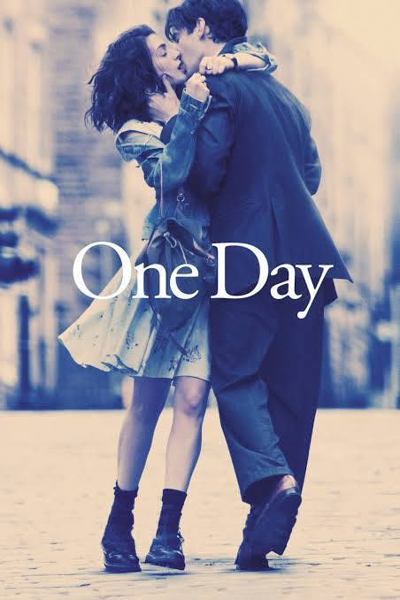
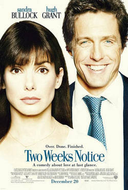
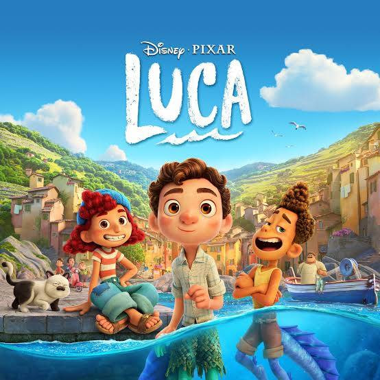

Why I Love the Things I Love
This page goes a little deeper into the things I mentioned on the home page and the reasons they have become meaningful to me.
Art
Art gives me a kind of peace that......
Art gives me a kind of peace that I don't always find elsewhere.
When I am creating, everything happening around me seems to
become quieter. For a while, there is nothing else to focus on
except me and the piece in front of me.
I love that feeling of slowly getting closer to a piece as I
work on it. It gives me time to pause, disconnect from everything
going on in my life, and reconnect with myself. It is not always
about creating something perfect; sometimes, I simply create
because it makes me feel at peace.
My Work

Music
Music has always been a part of my life.....
Music has always been a part of my life. I love how a song can change the way I feel in an instant, making me happy, nostalgic, inspired, or simply more alive. It can meet me wherever I am, whether I need something to move to, something to help me slow down, or simply something playing in the background.
I also love discovering new artists and songs that become part of my personal soundtrack. Sharing music with friends and family makes it even more meaningful because it gives us another way to connect, share memories, and simply be in the moment together.
My Soundtrack
-
Easy

-
Psalm 84

-
You Saved Me

-
Monday Morning Faith

-
Prince Of Peace

Currently On Repeat
Take Heart-Yafet Tesfaye
This is the song I’ve been coming back to lately. It has that kind of feeling that fits almost any moment whether I’m walking, getting ready to sleep, listening to it in the car, or even working out. Somehow, it always feels right wherever I am. I love how I can just press play and let myself get lost in the song for a while. It has become one of those songs I never really get tired of.
Movies
Movies have a special place in my life......
Movies have a special place in my life. They inspire me, make me feel
understood, take me to different worlds, and leave me with lessons
I carry long after the credits roll.
WHY I LOVE MOVIES
Movies have been a part of my life for as long as I can remember.
As I’ve grown and changed through the years, I’ve grown with them too.
I’ve cried with them, laughed with them, and experienced countless emotions through their stories.
Over time, movies have become more than just a way to pass the time.
I learn from them, find pieces of myself in them, and sometimes, they become a place I can simply escape to.
They’ve grown into one of my safe spaces.
MOVIES THAT STAY WITH ME

ONE DAY
It reminds me to cherish every moment and love deeply.
KIND RICHARD
It reminds me to cherish every moment and love deeply.

TWO WEEKS NOTICE
It reminds me to cherish every moment and love deeply.

LUCA
It reminds me to cherish every moment and love deeply.
ABOUT TIME
It reminds me to cherish every moment and love deeply.
Movies
Movies have a special place in my life......
Movies have a special place in my life. They inspire me, make me feel understood, take me to different worlds, and leave me with lessons I carry long after the credits roll.
WHY I LOVE MOVIES
Movies have been a part of my life for as long as I can remember. As I’ve grown and changed through the years, I’ve grown with them too. I’ve cried with them, laughed with them, and experienced countless emotions through their stories. Over time, movies have become more than just a way to pass the time. I learn from them, find pieces of myself in them, and sometimes, they become a place I can simply escape to. They’ve grown into one of my safe spaces.
MOVIES THAT STAY WITH ME

ONE DAY
It reminds me to cherish every moment and love deeply.
KIND RICHARD
It reminds me to cherish every moment and love deeply.

TWO WEEKS NOTICE
It reminds me to cherish every moment and love deeply.

LUCA
It reminds me to cherish every moment and love deeply.
ABOUT TIME
It reminds me to cherish every moment and love deeply.